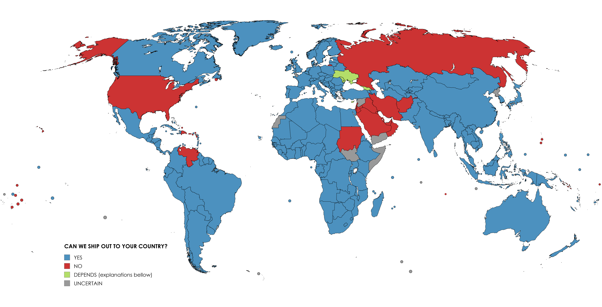

BELLOW YOU WILL FIND A MAP THAT DOCUMENTS WHERE WE CAN AND CANNOT SHIP OUT TO. (May differ if item ships from elsewhere)

EXPLANATIONS FOR COUNTRIES LABLED AS "DEPENDS"
Ukraine: Most Oblasts in Ukraine should theoretically be fine, and we should be able to ship it out to you. However, if you live in an Oblast which is occupied by Russia, then we're unforunately unable to do that. This includes: Luhansk, Donetsk, Zaporizhzhia, Kherson, and Crimea. If you also happen to live near those Oblasts, it might also cause trouble. As a rule of thumb; the closer you are to Poland, the more likely it is that we can ship it to you.
Maldova: Should in theory be fine, unless you live in Transnistria (AKA: Pridnestrovie, AKA: Administrative-Territorial Units of the Left Bank of the Dniester). Poland does not recognize Transnistria's independence, so shipping there may cause difficulties. We will still try to find a way to ship out to Transnistria if needed.
Georgia: The country, not the state. Very simillar story to Maldova, where most regions should be fine, but if you live in Abkhazia or South Ossetia, shipping there may be difficult, for Poland does not recognize their independence. Simillarly, we'll try to find a way to ship out to those countries/regions if needed.
Cyprus: This one is a bit more complicated. If you live in the Republic of Cyprus, then you're in the clear. If you live in the Turkish Republic of Northern Cyprus, then it's similar situation to Transnistria, Abkhazia, and South Ossetia, shipping may prove difficult, but we'll try to do it anyway. HOWEVER, if you live in the UN Buffer Zone, Akrotiri, or Dhekelia, then we have absolutely NO IDEA wether we can or cannot ship out to you. It's very confusiing, and Poczta Polska's website is of not help on the matter. Sorry.